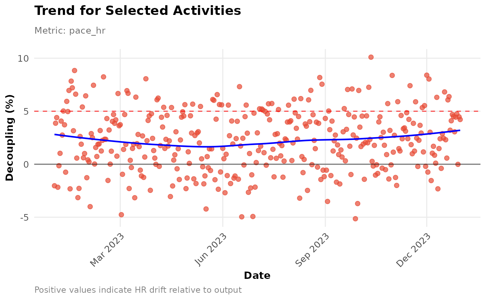

Visualizes the trend of aerobic decoupling over time.
Arguments
- data
Recommended: Pass pre-calculated data via
decoupling_df(local export preferred). A data frame fromcalculate_decoupling()or activities data fromload_local_activities().- activity_type
Type(s) of activities to analyze (e.g., "Run", "Ride").
- decouple_metric
Metric basis: "pace_hr" or "power_hr".
- start_date
Optional. Analysis start date (YYYY-MM-DD string or Date). Defaults to ~1 year ago.
- end_date
Optional. Analysis end date (YYYY-MM-DD string or Date). Defaults to today.
- min_duration_mins
Minimum activity duration (minutes) to include. Default 45.
- add_trend_line
Add a smoothed trend line (
geom_smooth)? DefaultTRUE.- smoothing_method
Smoothing method for trend line (e.g., "loess", "lm"). Default "loess".
- decoupling_df
Recommended. A pre-calculated data frame from
calculate_decoupling(). When provided, analysis uses local data only (no API calls). Must contain 'date' and 'decoupling' columns.
Details
Plots the aerobic decoupling trend over time. Recommended workflow: Use local data via decoupling_df.
Plots decoupling percentage ((EF_1st_half - EF_2nd_half) / EF_1st_half * 100).
Positive values mean HR drifted relative to output. A 5\% threshold line is often
used as reference. Best practice: Use load_local_activities() + calculate_decoupling() + this function.
Examples
# Example using pre-calculated sample data
data("athlytics_sample_decoupling", package = "Athlytics")
p <- plot_decoupling(decoupling_df = athlytics_sample_decoupling)
#> Generating plot...
print(p)
#> `geom_smooth()` using formula = 'y ~ x'

if (FALSE) { # \dontrun{
# Example using local Strava export data
activities <- load_local_activities("strava_export_data/activities.csv")
# Example 1: Plot Decoupling trend for Runs (last 6 months)
decoupling_runs_6mo <- calculate_decoupling(
activities_data = activities,
export_dir = "strava_export_data",
activity_type = "Run",
decouple_metric = "pace_hr",
start_date = Sys.Date() - months(6)
)
plot_decoupling(decoupling_runs_6mo)
# Example 2: Plot Decoupling trend for Rides
decoupling_rides <- calculate_decoupling(
activities_data = activities,
export_dir = "strava_export_data",
activity_type = "Ride",
decouple_metric = "power_hr"
)
plot_decoupling(decoupling_rides)
# Example 3: Plot Decoupling trend for multiple Run types (no trend line)
decoupling_multi_run <- calculate_decoupling(
activities_data = activities,
export_dir = "strava_export_data",
activity_type = c("Run", "VirtualRun"),
decouple_metric = "pace_hr"
)
plot_decoupling(decoupling_multi_run, add_trend_line = FALSE)
} # }